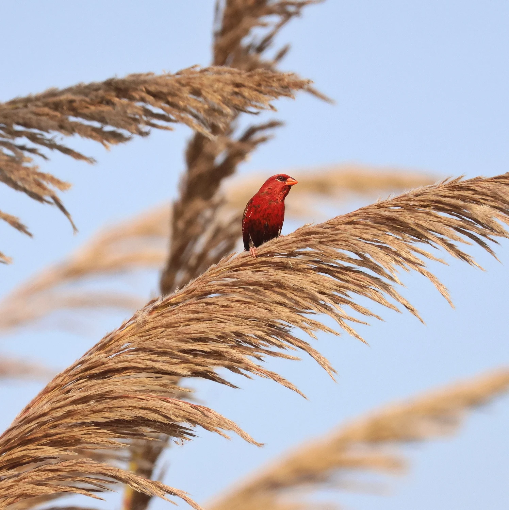
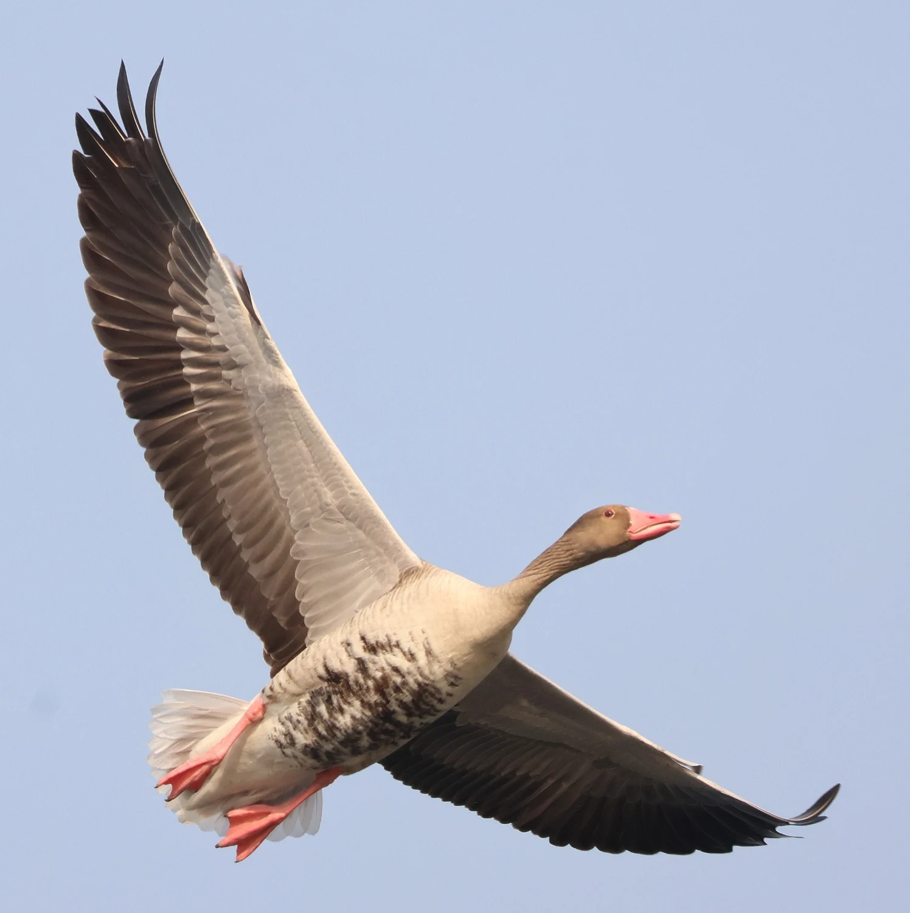
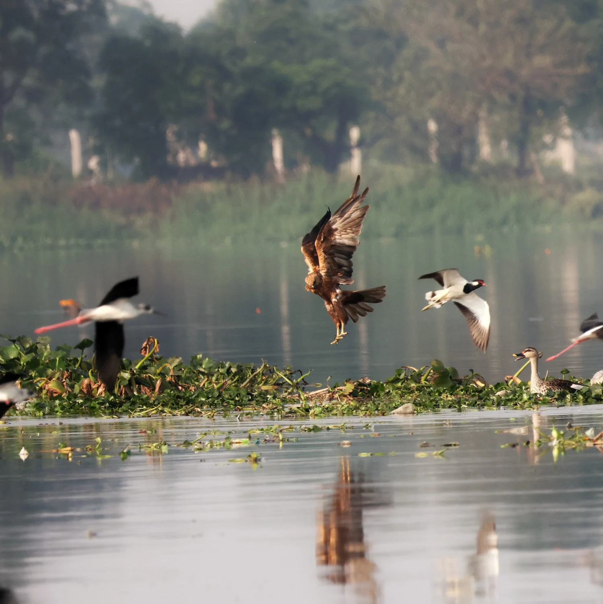

Discover a world hiding in plain sight.
Come birding with me ↗ Birds over a golden sunrise · Kashif Yameen
Birds over a golden sunrise · Kashif YameenJoin Kashif for a personalised encounter with nature.
Explore ↗
Red bird among reeds · Kashif Yameen Flamingos on a wetland · Kashif Yameen
Flamingos on a wetland · Kashif YameenLearn to recognise birds by shape, habitat and sound.
Explore ↗
Goose in flight · Kashif Yameen
Birds in motion over water · Kashif YameenTake time to observe and photograph wildlife responsibly.
Explore ↗ Raptor in flight with prey · Kashif Yameen
Raptor in flight with prey · Kashif YameenMove your pointer or touch the water to disturb its reflection.
Follow the movement of a bird across the landscape as you scroll.

Cool mornings, occasional fog and winter migrants. Bring warm layers and binoculars.
Explore seasonal guide ↗Illustrative seasonal conditions, not a live forecast. Sightings vary.
Explore Delhi NCR with curiosity, patience and respect for wildlife.
Plan your birding experience ↗Garden paths, historic monuments and common urban birds.
Half day · Explore ↗Wetlands & seasonal migrantsWetland edges, waterbirds and open-country birding.
Half or full day · Explore ↗Yamuna wetlandsExplore accessible wetland viewpoints and waterbird habitats.
Half day · Explore ↗Open wetlandsScan open water and fields for seasonal birds and cranes.
Half or full day · Explore ↗Wetlands & photographyExplore wetland habitats and surrounding agricultural landscapes.
Half day · Explore ↗Aravalli woodlandDiscover scrub, rocky landscapes and woodland birdlife.
Half day · Explore ↗Woodland trailsWalk forest paths and listen for woodland birds.
Half day · Explore ↗Native habitatsExplore restored native vegetation and seasonal birdlife.
Half day · Explore ↗Biodiversity & wetlandsDiscover restored ecosystems and their bird communities.
Half day · Explore ↗